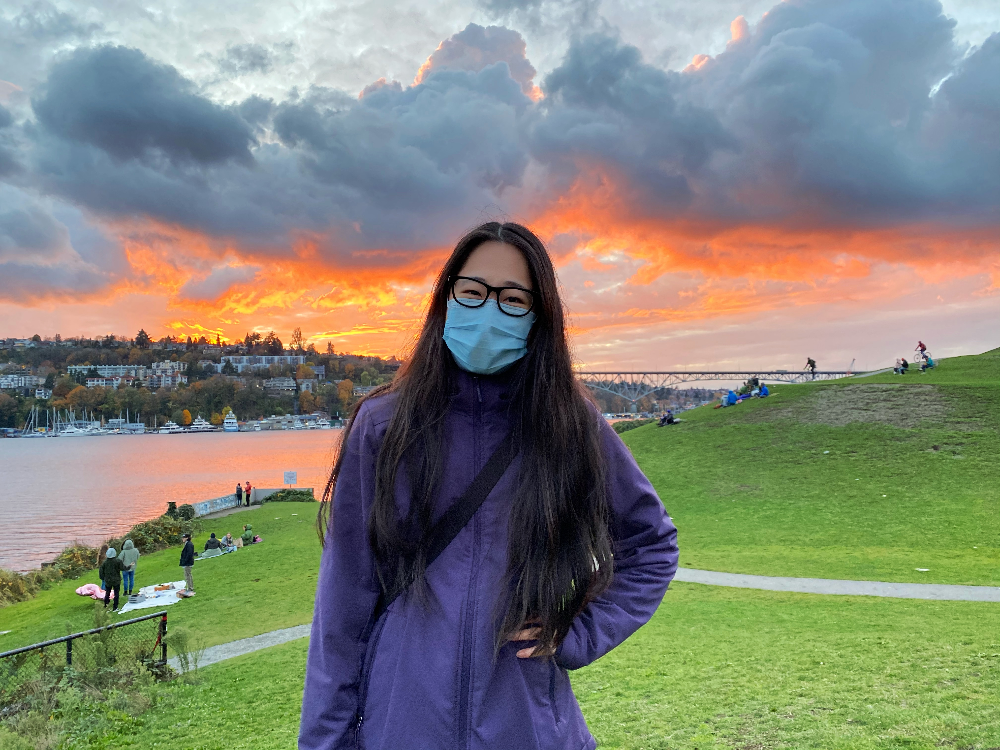
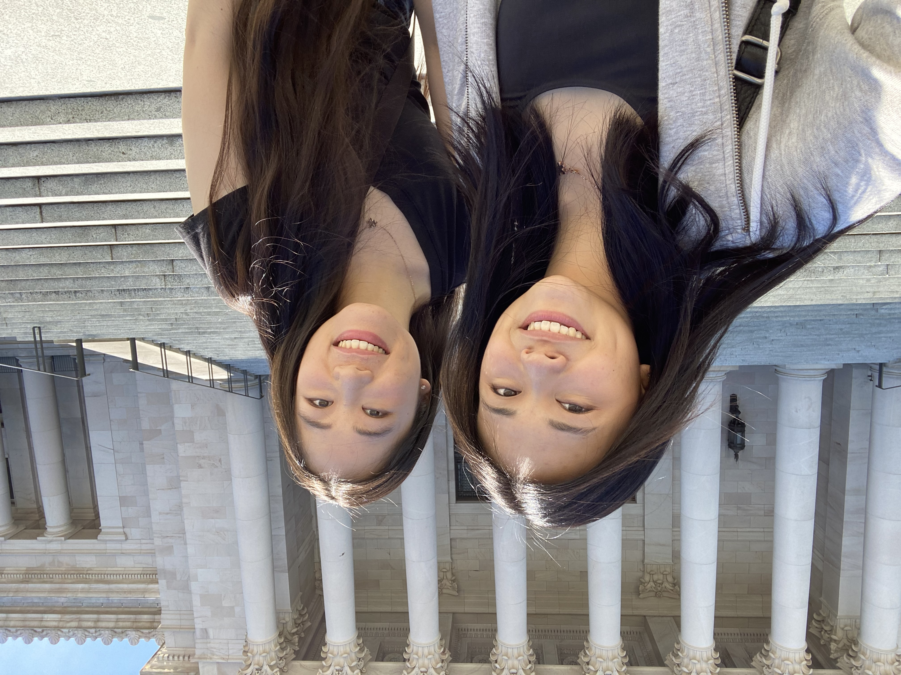
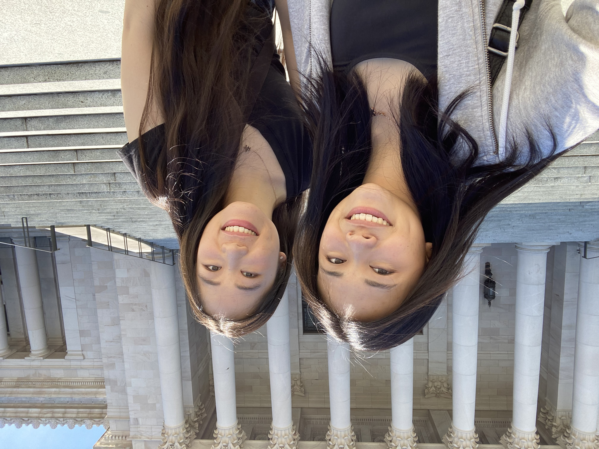

Year 3

Snapshots

This is still one of tne of the brightest sunsets that I've encountered to date!
Went on a day trip to Olympia, WA to eat pastries and walk around the state capitol!
This is still one of tne of the brightest sunsets that I've encountered to date!
Went on a day trip to Olympia, WA to eat pastries and walk around the state capitol!